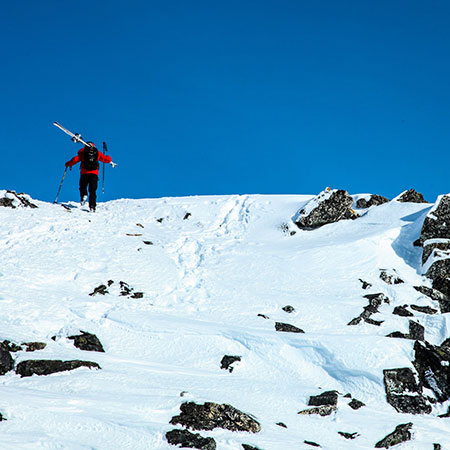

If you want to remove yourself from civilization, this little town in Norway is the perfect place for you. With a population of 6000, Stranda is one of the most beautiful and untouched places I have ever been to. In between the mountain there are fjords which give the unusual experiences of mountains and water at the same time. The lift system is fairly small, so it is not the ideal place for someone who likes to stay within the prepared slopes yet want a lot of variety. To be able to truly experience Stranda, you have to go off the grid and ski in one of the many backcountry runs.
The mountain is very backcountry friendly since it is not too steep and has a lot of open areas without rocks.
Chamonix, France
Chamonix is the Aspen of Europe. Located close to the border of Switzerland, it is a popular place for all of Europe to ski. It has a big lift system, good backcountry skiing while still having michelin star restaurants in the village. It is the perfect place for families because there are so many things to do. The slopes are fun and challenging enough for more advanced skiers to enjoy, but the system has variety enough to also cater to less skilled skiers.
The backcountry skiing is also fantastic is Chamonix, though very dependent on the snow and weather conditions.
The actual town has multiple clothing stores and there are many fun bars for apres ski refreshments. Overall, it is a great place to go to for everyone.
Jackson Hole, WY
Similarly to Stranda, Jackson hole has a smaller lift system but a huge backcountry range. Jackson Hole is the town next to the Teton mountains which is where the skiing system is built upon. It has slopes for all levels for skiing, but it really excels in the backcountry skiing aspect.
It has many iconic backcountry runs, where the infamous “Colbert's Couloir” has to be the most talked about. This couloir features a fall of over 20 feet and is on the bucket list of many skiers around the world.
However, you do not have to be crazy in order to enjoy Jackson Hole because there are many other options for the less daring. Additionally, Jackson Hole has many nice hotels and restaurants as well as a deer farm where they give tours if you are feeling tired from all the skiing.
Whistler, Canada

Whistler is an all in one package and offers something for almost everyone. It is located an hour away from Vancouver, Canada and held the winter olympic games in 2010. The lift system in Whistler is connected to another system called Blackcomb. The system takes days to fully explore, and if you are looking for even more, the backcountry skiing is fantastic. The one downside is that it can be severely crowded during peak season, but this is a product of the high quality skiing that so many people enjoy.
The two contain tops are connected through a tram called “peak to Peak” which is an experience in itself.